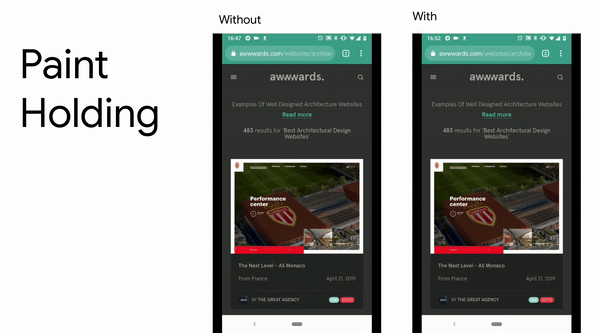
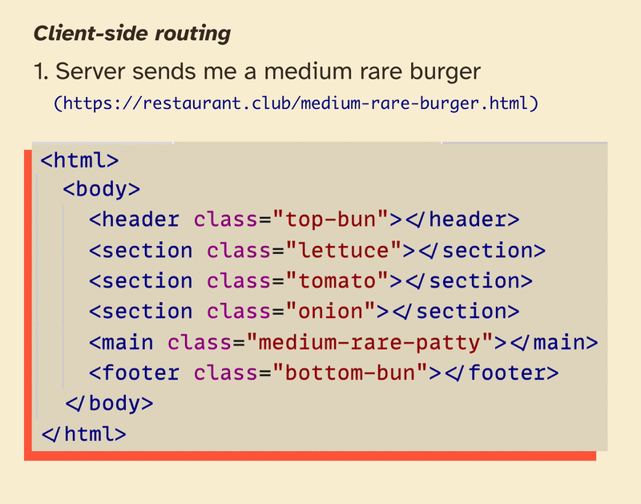

Understanding single page apps & client-side routing
7 minute read•Last updated
"SPA" has been a hot topic ever since "modern" JS frameworks like React hit the scene. They promise all sorts of benefits like dynamic user interactions, lightning-fast load times, solving world hunger, etc. (okay that last one is a stretch...)
But have you ever stopped to wonder what's actually going on behind the scenes? And if you're not using an SPA, are you stuck in the past? Well, let's explore:
- ü§î How non-SPAs work + how they perform on the modern web (spoiler, they're a great choice as always!)
- ⚙️ The key benefits and inner workings of an SPA
- üçî A side-by-side visual comparison feat. juicy burgers
Onwards!
ü§î First off, how do non- SPAs work?
Web development has been soaking in acronym soup lately, so I think it's worth clarifying what isn't an SPA first üôÉ
If your site isn't an SPA, you're likely using what's called "server-based routing." A metaphor is in order here. Say you're at a formal, sit-down restaurant with a waiter (a server if you will üòâ). If you want food, you'll have to:
- Ask the waiter for the food you want
- Wait a moment for the dish to get prepared
- Receive your finished plate once it's done
This is how all websites work when you first visit them. You ask for what you want (visiting a URL like https://breakfast.club)), wait for the server to get back to you (loading spinner), then enjoy your "meal" once it's ready (the page is done loading! üéâ)
But what if you want to order dessert? Heading back to our restaurant scenario, you'll go through the same flow as last time:
- Ask the waiter for the yummiest dessert
- Hand them your dirty plates
- Wait a moment for the dish to get prepared
- Receive a shiny new bowl with your ice cream sundae üç®
There's an important bit I want to reiterate there: you hand over your dirty plates, and get back a brand new one. This is why you'll see a little loading bar re-appear every time you jump to a new page. Here's an example of 11ty's documentation using server-based routing:

Watch the loading bar engage whenever we click a link
At first, it looks like you're still on the same page whenever you click those navigation links, and the browser's only refreshes the bits that change (the documentation).
üö® But that's not really the case! Whenever you click a link, your browser is "clearing your plate" (removing everything from the page) and pulling in a fresh meal, navigation and all. So you're really reloading all those pieces of navigation every time you visit a new page, even if they were already on your plate to begin with.
Wait, is that wasteful?
It may sound like the browser's doing a lot of extra work here! Although this is still an issue that SPAs can help with, it's not as problematic as it used to be. Here's a few efficiency points to consider:
1. HTML is super cheap to load and render
Even though the browser is "re-painting" the page from scratch every time, it only takes a few milliseconds to load that HTML skeleton. The truly expensive bits are the styles, scripts, and images the browser needs to fetch, which leads us to...
2. Shared resources don't need to get re-loaded
For instance, say every documentation page pulls in the same CSS file: <link rel="stylesheet" href="documentation.css">. When you click another link that also pulls this CSS, the browser's smart enough to say "oh, I loaded this already! I'll just use that and apply it to the page." The same goes for images and fonts as well.
üí° Note: This is all thanks to caching. If you want to go deeper, the Remix team has an excellent walkthrough on caching documents, resources, and more over here üòÑ
So the actual loading of these shared resources isn't a problem. But what about painting those resources to the page over and over again? This brings us to...
3. The next page only appears when it's ready
Back in the day, there was a risk you'd see a flash of white nothingness between "clearing the plate" and "receiving the new one." But modern browsers have pretty much resolved this! In short, web browsers wait for the signal that the next page isn't just "done loading," but is also ready for you to view and interact with. Think of this like bringing out your plate when it's ready to eat, instead of bringing you a plate of ingredients you have to assemble yourself.

Hibachi rendering: showing you the page painting process before it's ready to eat (it's less cool when browsers do it) üòâ
This especially helps out pages that rely on blocking resources like JavaScript to render everything on the page. Here's a quick before-and-after shot by the Chrome team when they launched this concept üöÄ

Source article by Addy Osmani
Disclaimer: The browser won't always wait for the next page to be interactive before showing it; It'll still show the half-finished page if you're on a slow internet connection and the browser decides it's waited too long. Still, for snappier sites like that 11ty documentation from earlier, it shouldn't be a problem!
üíÅ Now, let's talk single page apps
So how do SPAs compare? Well, let's revisit that restaurant example from before. When you first visit a site using the SPA approach, everything works pretty much the same:
- Ask the server for the food you want (visit
https://spa-breakfast.club) - Wait a moment for the dish to get prepared (browser loading spinner)
- Receive your finished plate once it's done (the page is done loading! üéâ)
Now the interesting part comes when you go back for seconds. When you click a link on an SPA, it replaces the typical, server-based routing with clientside routing üòÆ In other words, we process all link requests using JavaScript we wrote ourselves, instead of sending those requests to the server right away.
Here's a code snippet to get your brain moving ü߆
<a href="/desert">Go eat desert</a>
<script>
document.addEventListener('click', (event) => {
if (
// if you clicked on an A-nchor tag (link)
event.target.tagName === 'A' &&
// and you're going to a page on this domain (like /desert)
event.target.origin === location.origin
) {
// don't ask the server for that resource!
event.preventDefault()
// instead, we'll go fetch the resource ourselves
const response = fetch('https://buffet.table/desert')
// ...convert that response to something we can work with
const htmlString = await response.text()
const desert = new DOMParser()
.parseFromString(htmlString, 'text/html')
// ...and do something with that desert element
// ex. append desert to our "plate" in the DOM
document.querySelector('.my-plate').appendChild(desert)
}
})
</script>
Pretty weird, right? This is the super-simplified crux of an SPA: you never truly "leave" the page you started on. Instead, you intercept all future requests (link clicks) and handle the fetching yourself. You'll often do this using the fetch API native to all modern browsers as demo-d above.
This is why I'd think of SPAs and clientside routing like a buffet. Instead of ordering your meal and waiting for it to get prepared, you can get out of your seat and grab that pre-prepared food yourself!
Key benefits to this approach
There are 2 major benefits to single page apps that clientside routing unlocks üîì
First, load-time efficiency can go up üöÄ I say "can" because of all the serverside routing optimization I mentioned previously (which may cancel out any performance gains). But there is a noticeable difference for resource-hungry frameworks like React, Vue, and Svelte. All of these use some form of clientside routing to keep JavaScript load times to a minimum.
For instance, if I went from one page of a React app to another using serverside routing, the browser would re-parse and re-render the whole page using JavaScript! This can severely impact your "time to interactive," an accessibility concern you can learn more about here.
Second, you can now build dynamic, app-like interactions ⚙️ Animated page transitions are the easiest to point out here. Since you're fully in control of loading new content and applying it to the page, you can pull off all sorts of CSS trickery like cross-fades, pop-up modals, tab sliders, and more. Here's an example from my personal site using clientside routing:

üçî A juicy visual comparison
Now that we've introduced SPAs + clientside routing as a concept, lets see a side-by-side comparison with serverside routing.
Say you receive your order for a juicy burger that's cooked medium rare, but would rather have a patty that's well done.
We'll imagine this moment as "clicking a link," requesting to go from /medium-rare-burger to /well-done-burger.
Here's what that "click" may do with a server-based approach:

Animation showing the 3 step rendering process
Then, here's how clientside routing may handle the request:

Animation showing our new 4 step rendering process
Notice that we never clear our page in the SPA approach! We just request the resource (a well-done burger), pick out the pieces we want to add to our page (the patty), and perform the DOM manipulation with JavaScript.
This doesn't have much performance benefits when we're talking HTML files. But if that HTML has some JavaScript and styles attached to it that we can also fetch (like, say, a React component), there's a lot of room for performance gains.
Wrapping up: so which should I choose?
Although SPAs seem like the "silver bullet" for any website, there's a case to be made for either approach.
- The most obvious win for server-side routing is, well, it's just simpler. No need to write and maintain all those click listeners; just let the browser do the serving for you. Yes, you'll often use a framework-specific library for SPAs like React Router, but learning and updating JS libraries is always more overhead.
- The second win for server-side is no accessibility worries. When you handle all the routing clientside, you run the risk of hurting screenreader and keyboard experiences. For instance, you'll need to alert screenreader users that new content has appeared on the page whenever they click a link. And for keyboard-ists, you need to make sure their focusing the right element when something new swipes into view.
☝️ But if you're addressing these concerns confidently (or using a robust library to do it for you), SPAs are a great way to go!